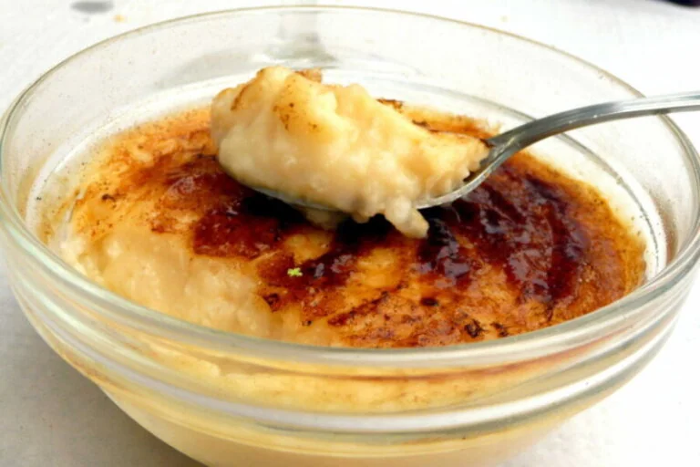

Rice pudding is a classic dessert that is now beloved throughout Latin America
Rice pudding is one of the most popular traditional Argentine recipes. This dessert is excellent not only for its flavor but also for how easy and affordable it is.

Ingredients:
200 gr. of rice
2 liters of milk
300 gr. of sugar
Cinnamon sticks and ground cinnamon
Lemon peel
Step by step:
Place the rice and two liters of milk in a pot.
Cut a few pieces of lemon peel and add them to the pot.
Add a cinnamon stick to the rice pudding to flavor the mixture while cooking.
Let it sit for 30 to 60 minutes, allowing the rice to become fragrant and blend with the flavors of the cinnamon and lemon.
After the time has elapsed, place the pot on the stove and cover until it comes close to boiling.
When it's almost boiling, uncover the pot and stir the mixture gently.
When the rice is medium-cooked, add the sugar. Continue stirring until the milk begins to evaporate and the mixture thickens.
When it's cooked, turn off the heat, remove the cinnamon, and remove the lemon peel. Let the rice pudding rest while stirring
until the milk evaporates.
Then, refrigerate for 20 minutes.
When you're ready to serve the rice pudding, add a little ground cinnamon.